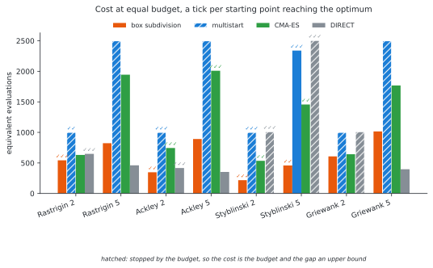
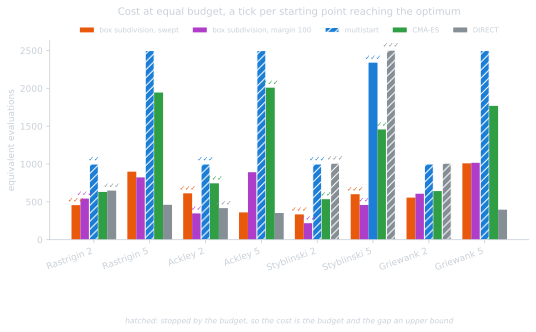
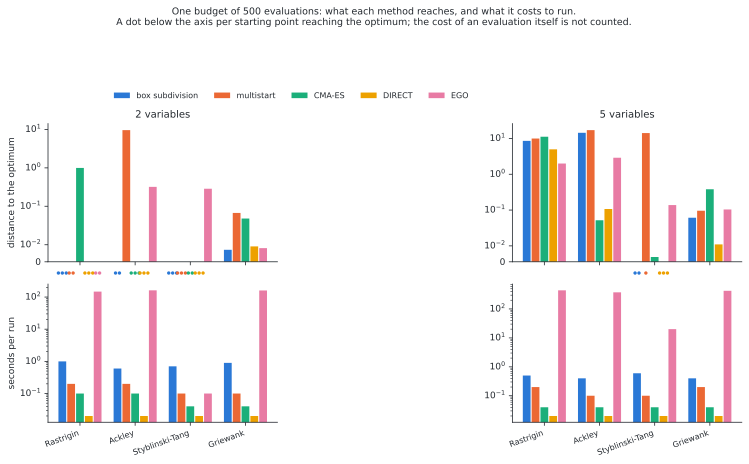
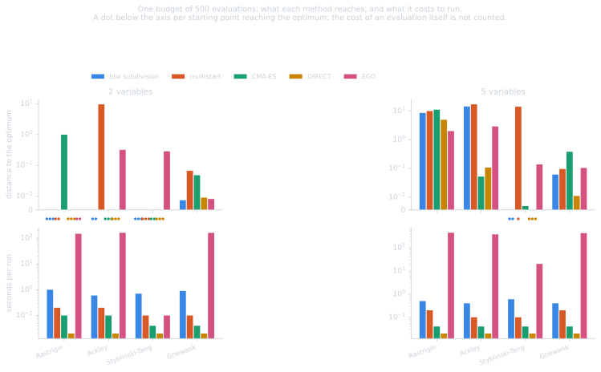
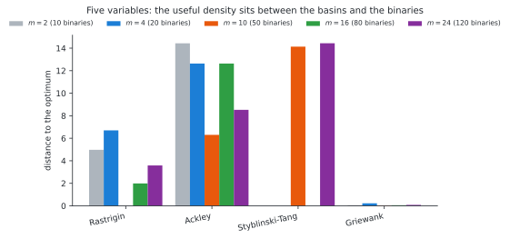
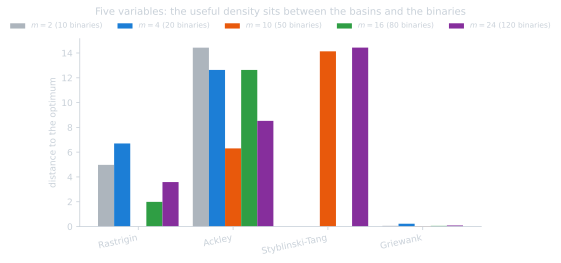

Results#
What the method achieves, against the exhaustive enumeration of the boxes and against the three baselines of the problem class. The problems are described in one appendix and the baselines in the other; how the settings were arrived at is annex C.
Reproduce with tox -e benchmark.
Important
Every selection on this page holds within its budget, and not beyond it. The runs are given a fixed number of equivalent evaluations, and a cell whose cost equals that budget was stopped by the budget rather than by its own criterion: its distance to the optimum is an upper bound on what the same configuration would reach with more evaluations, not a result. Ranking two such cells says which got further within the budget, which is a weaker statement than which solves the problem. Cells reporting a cost below the budget did end on their own, and those comparisons are between finished runs.
Where a conclusion here rests on a truncated run it is marked. The honest summary is that if the goal were to solve a problem from every starting point whatever the cost, the first thing to spend is budget, and the choices compared here would have to be re-ranked at that larger budget.
Against the enumeration of the boxes#
The reference is the enumeration: solving the sub-problem of every box. It is
exhaustive, embarrassingly parallel and needs no cuts, so the outer approximation
is only worth its complexity if it reaches the same optimum after substantially
fewer sub-problems. Both drive the same main problem through the same Benders
formulation, so the comparison isolates the exploration strategy.
Rastrigin in two dimensions, \(10 \times 10 = 100\) boxes, eight starting points, counted in executions of the objective discipline:
formulation |
method |
objective |
boxes solved |
executions |
|---|---|---|---|---|
constraint |
enumeration |
\(0.0\) |
100 |
1427 |
constraint |
outer approximation |
\(0.0\) |
24 to 36 |
341 to 521 |
normalized |
enumeration |
\(0.0\) |
100 |
1267 |
normalized |
outer approximation |
\(0.0\) |
20 to 36 |
255 to 458 |
About three times cheaper for the same optimum, solving a quarter to a third of the boxes. Both formulations reach the optimum from seven starting points out of eight, so reliability no longer separates them; what does is cost. The normalized formulation enumerates for about 11% less, its sub-problems being bounded by their box instead of having to restore the feasibility of a box constraint, and its cheapest outer-approximation runs are cheaper still, \(255\) executions against \(341\). It is therefore the one to prefer, by a small margin.
Against the baselines#
Four problems, two dimensions, three starting points, a budget of \(500\) equivalent evaluations per design variable under the adjoint convention. Each cell is the median distance to the optimum, the median cost, and the number of starting points from which the optimum was reached.
problem |
\(n\) |
box subdivision |
multistart |
CMA-ES |
DIRECT |
|---|---|---|---|---|---|
Rastrigin |
2 |
\(0.00\) · 543 · 3/3 |
\(0.00\) · 1000 · 2/3 |
\(1.00\) · 631 · 0/3 |
\(0.00\) · 649 · 3/3 |
Rastrigin |
5 |
\(4.98\) · 823 · 0/3 |
\(3.98\) · 2500 · 0/3 |
\(8.96\) · 1945 · 0/3 |
\(4.98\) · 461 · 0/3 |
Ackley |
2 |
\(0.00\) · 347 · 2/3 |
\(0.00\) · 1000 · 3/3 |
\(0.00\) · 745 · 3/3 |
\(0.00\) · 417 · 3/3 |
Ackley |
5 |
\(14.43\) · 892 · 0/3 |
\(9.55\) · 2500 · 0/3 |
\(0.00\) · 2009 · 3/3 |
\(0.11\) · 353 · 0/3 |
Styblinski-Tang |
2 |
\(0.00\) · 218 · 3/3 |
\(0.00\) · 1000 · 3/3 |
\(0.00\) · 535 · 2/3 |
\(0.00\) · 1011 · 3/3 |
Styblinski-Tang |
5 |
\(0.00\) · 458 · 2/3 |
\(0.00\) · 2340 · 3/3 |
\(0.00\) · 1457 · 2/3 |
\(0.00\) · 2505 · 3/3 |
Griewank |
2 |
\(0.01\) · 607 · 0/3 |
\(0.01\) · 1000 · 0/3 |
\(0.05\) · 643 · 0/3 |
\(0.01\) · 1011 · 0/3 |
Griewank |
5 |
\(0.06\) · 1016 · 0/3 |
\(0.05\) · 2500 · 0/3 |
\(0.03\) · 1769 · 0/3 |
\(0.01\) · 397 · 0/3 |


Where it works, it is the cheapest. Styblinski-Tang in five dimensions is solved for \(458\) evaluations, against \(2340\) for multistart, \(1457\) for CMA-ES and \(2505\) for DIRECT: the same answer, three to five times cheaper. In two dimensions it is the cheapest column on three problems out of four, \(543\), \(347\) and \(218\) evaluations, roughly half of what the next method spends.
It is not the most reliable. On Ackley in five dimensions CMA-ES reaches the optimum every time and the method does not; on Griewank, DIRECT is closer at a fraction of the cost. DIRECT is a serious baseline at low dimension, cheap and reliable, so any claim for the method has to be made against it rather than against multistart alone.
The five-variable rows are the method at its default density, two subdivisions per variable, which bounds the enumeration and is not the best choice for three of these four problems. At ten subdivisions per variable Rastrigin in five dimensions is solved from every starting point for about \(2100\) evaluations, which no baseline here achieves at any budget tried, and Ackley and Griewank both improve as well. The next section is that sweep, and it is where the method’s case actually rests.
Warning
These numbers are measurements, not a claim of generalization. The convexity margin and the number of subdivisions were tuned on these very problems, and the margin is an absolute quantity in the units of the objective, so it does not even transfer between them unchanged. A claim about the method needs a held-out set of problems and a protocol fixed in advance. Sweeping the margin rather than supplying it is how a run avoids choosing that value at all, and it is measured below.
At a budget every method can afford#
The comparison above gives every method \(500\) equivalent evaluations per variable, which is generous to all of them and representative of nothing industrial. It also excludes Bayesian optimization, whose cost per iteration is cubic in the points gathered so far: one EGO run of \(500\) evaluations takes about two and a half minutes here against three seconds for the box subdivision, and at the budgets above it would measure wall time rather than method quality.
So here is the same set of methods at one budget of \(500\) evaluations, which every one of them can afford, and which is the regime both EGO and this method are built for: an objective costing minutes, where a few hundred evaluations is the whole budget. Four problems, two dimensions each, three starting points, the median distance to the optimum and the number of starting points reaching it.
problem |
\(n\) |
box subdivision |
multistart |
CMA-ES |
DIRECT |
EGO |
|---|---|---|---|---|---|---|
Rastrigin |
2 |
\(0.00\) · 3/3 |
\(0.00\) · 2/3 |
\(1.00\) |
\(0.00\) · 3/3 |
\(0.00\) · 2/3 |
Ackley |
2 |
\(0.00\) · 2/3 |
\(9.58\) |
\(0.00\) · 3/3 |
\(0.00\) · 3/3 |
\(0.32\) |
Styblinski-Tang |
2 |
\(0.00\) · 3/3 · 218 |
\(0.00\) · 3/3 |
\(0.00\) · 2/3 |
\(0.00\) · 3/3 |
\(0.29\) · 29‡ |
Griewank |
2 |
\(0.007\) |
\(0.067\) |
\(0.048\) |
\(0.009\) |
\(0.008\) |
Rastrigin |
5 |
\(8.57\) |
\(9.95\) |
\(11.20\) |
\(4.98\) |
\(1.99\) |
Ackley |
5 |
\(14.43\) |
\(17.06\) |
\(0.05\) |
\(0.11\) |
\(2.90\) |
Styblinski-Tang |
5 |
\(0.00\) · 2/3 · 458 |
\(14.14\) · 1/3 |
\(0.003\) |
\(0.00\) · 3/3 |
\(0.14\) · 219‡ |
Griewank |
5 |
\(0.061\) |
\(0.096\) |
\(0.381\) |
\(0.011\) |
\(0.104\) |


The lower row is the caveat the upper one cannot show: the distance to the optimum is measured in evaluations, and EGO’s own time per run is two orders of magnitude above every other method’s. On an objective costing minutes that row vanishes; on these it decides.
‡ EGO stopped on its own criterion, after \(29\) and \(219\) evaluations of the \(500\) it was allowed: its expected improvement collapses once the process models the landscape. Every other cell of the table spent its whole budget.
EGO is the best explorer of the hard multimodal cases at this budget, and by a wide margin where it matters most: on Rastrigin in five dimensions it returns \(1.99\) where the next best is DIRECT at \(4.98\) and the box subdivision at \(8.57\). It also gets closest on Griewank in two dimensions. That is the result your intuition should keep: given few evaluations and a landscape of many basins, a surrogate over the whole history beats every method here that throws its history away.
It is also a hundred times more expensive in its own time, \(444\) seconds against \(3\) for the box subdivision on the same cell, and that cost is not counted anywhere in the table. On an objective costing minutes the ratio inverts and the table stands; on these analytic problems it does not.
The box subdivision is the cheapest route to a solved problem where the subdivision resolves the basins, Styblinski-Tang at \(218\) evaluations in two dimensions and \(458\) in five, both ending on their own criterion rather than on the budget. Where it does not resolve them, five hundred evaluations is simply too few for it: Rastrigin at five variables needs the \(2103\) of the density sweep below, and no method here solves that problem at this budget.
Note
This table and the one above answer different questions, and neither supersedes the other. This one asks which method gets furthest when evaluations are scarce, which is the industrial case. The one above asks what each method reaches when evaluations are plentiful, which is where the box subdivision’s density can be afforded at all.
The density of the subdivision decides#
The number of boxes is the Cartesian product of the subdivisions, so it explodes with the dimension, but the master does not see it: it sees the one-hot binaries, \(\sum_j m_j\), which grow linearly. Five variables with ten subdivisions each is \(100\,000\) boxes and only \(50\) binaries.
Five variables, the adaptive configuration, a budget of \(2500\), three starting
points. The median distance to the optimum, the median cost, and the number of
starting points reaching it:
\(m\) |
binaries |
boxes |
Rastrigin |
Ackley |
Styblinski-Tang |
Griewank |
|---|---|---|---|---|---|---|
2 |
10 |
\(32\) |
\(4.98\) · 823 |
\(14.43\) · 892 |
\(0.00\) · 458 · 2/3 |
\(0.06\) · 1016 |
4 |
20 |
\(10^3\) |
\(6.70\) · 714 |
\(12.63\) · 1277 |
\(0.00\) · 846 · 3/3 |
\(0.22\) · 1547 |
10 |
50 |
\(10^5\) |
\(0.00\) · 2103 · 3/3 |
\(6.30\) · 2500† |
\(14.14\) · 598 · 1/3 |
\(0.03\) · 2500† |
16 |
80 |
\(10^6\) |
\(1.99\) · 1706 |
\(12.63\) · 2500† |
\(0.00\) · 973 · 2/3 |
\(0.05\) · 2500† |
24 |
120 |
\(8 \cdot 10^6\) |
\(3.59\) · 1628 |
\(8.53\) · 2500† |
\(14.44\) · 1098 · 1/3 |
\(0.08\) · 2500† |
† stopped by the budget, so the gap is an upper bound rather than a result.


Rastrigin in five dimensions is solved, from every starting point, for about \(2100\) evaluations, which no baseline achieves at any budget tried here. That is the headline of the whole benchmark, and it needs ten subdivisions per variable: at two or four the problem is not solved at all.
The Rastrigin and Styblinski-Tang columns are between finished runs, every cell ending below the budget, so what follows about them is a comparison of results. The Ackley and Griewank columns are not: from ten subdivisions upwards every run is stopped by the budget, so those two columns rank how far each density got in \(2500\) evaluations and say nothing about which density would win with more. Ackley’s apparent improvement with refinement is that kind of statement and no stronger.
There is a ceiling, and it is the binaries. Past ten subdivisions the quality falls away on Rastrigin, \(1.99\) at sixteen and \(3.59\) at twenty-four, while the cost falls too, which is the signature of a run ending early rather than searching harder. The cut model carries \(\sum_j m_j\) coefficients and a budget buys a few dozen cuts to identify them, so a subdivision is usable while its binaries stay below the sub-problems a budget can pay for. Fifty against about fifty is the edge; eighty is past it. This is the rule the number of boxes never gave: \(10^5\) boxes are fine and \(10^6\) are not, for a reason that has nothing to do with either figure.
There is also a floor, and it is the basins. The subdivision has to separate the minima, which is why Rastrigin needs ten: its basins are about one unit apart over a range of ten.
And refining past the basins is not free. Styblinski-Tang has two basins per variable and is solved at two and four subdivisions; at ten it is not, \(14.14\) and one starting point out of three. Ten subdivisions cut each of its basins into five boxes, and a box holding no minimum of its own returns a value and a sensitivity that say nothing about where the minimum is, so the ranking degrades. The same reversal appears under the pure convexification and under three of the four trust-region radii, in annex C, so it belongs to the subdivision and not to the master.
So the useful density sits between the basins and the binaries, and no single
value serves all four problems: ten is best for three of them and worst for the
fourth. The default of benchmarks/baselines.py bounds the enumeration rather
than guessing, and the density is the first thing to sweep on a new problem.
Sweeping the convexity rather than supplying it#
Every number on this page above was obtained with a convexity margin chosen for the problem it was run on, in the units of that problem’s objective. That is the method’s standing criticism, and the answer is to sweep the value rather than supply it: the master’s parallel probes carry a ladder of convexity values, a probe proposing a box already solved climbs a rung, and the bound of the ladder is read off the spread of the objective over the boxes already solved.
Rastrigin and Ackley in two dimensions, whose objectives differ by a factor of four in scale, ten subdivisions, a budget of \(1000\), six starting points. The median gap, the median cost and the starting points from which the optimum is reached:
convexity |
Rastrigin, spans \(\approx 80\) |
Ackley, spans \(\approx 22\) |
|---|---|---|
fixed, margin \(10\) |
\(0.000\) · 226 · 4/6 |
\(10.415\) · 208 · 1/6 |
fixed, margin \(100\) |
\(0.000\) · 543 · 6/6 |
\(0.000\) · 428 · 4/6 |
sweep, \(\kappa_{\max} = 100\) |
\(0.000\) · 491 · 6/6 |
\(0.000\) · 517 · 6/6 |
sweep, no bound at all |
\(0.000\) · 489 · 6/6 |
\(0.000\) · 601 · 6/6 |
No fixed margin is good on both problems, and the sweep is. The margin the tuning settled on, \(100\), is the best fixed row and still reaches Ackley from four starting points out of six; the sweep reaches both problems from all six, and the last row is given no convexity value whatever.
Its bound is forgiving where a margin is brittle. A bound ten times too large costs \(532\) evaluations against \(491\) on Rastrigin and changes nothing that is reached there, because the low rungs stay on the ladder either way; a margin ten times too small reaches one starting point out of six. The bound is not free — the same over-estimate does cost two starting points on Ackley — it is merely forgiving.
It is not free, and it is not measured widely. Escalation costs mixed-integer solves rather than evaluations, which is why the swept rows cost what the calibrated one costs; and two problems in two dimensions establish no factor. The full table, the reading of the bound off the objective, and what the headroom is for are in annex C.
The extensions, and what they are worth#
Four extensions were built on the method and measured at equal budget, five variables, \(2500\) equivalent evaluations: subdividing some variables only, the multi-resolution encoding, the hierarchies of subdivisions, and the scores that rank a box. None of them becomes a default, and each says where the method’s difficulty lies. The tables are in annex D; the verdicts are:
subdividing some variables only wins where the multimodality is concentrated and loses where it is not, which is the requirement of the method restated. The cheapest configuration that works is not the one matching the multimodality exactly: the binaries govern here as everywhere else;
the multi-resolution encoding is the one construction that changes what a resolution costs in binaries — sixteen subdivisions per variable for forty binaries instead of eighty — and it earns its place on the one problem the density sweep breaks on, Styblinski-Tang. Fewer, wider levels beat more, narrower ones;
the hierarchies answer one specific shape of problem, a basin too broad for any affordable density: the deep shape solves Ackley at five variables, which nothing else here does. The frontier, the only shape able to undo a choice, is the worst of the family, because every node restarts a master and throws its cuts away;
the positional weighting of a subdivision stays the wrong choice, which is the trust-region metric conclusion reappearing in a second setting.
Several of those comparisons are between runs the budget stopped, so annex D re-runs the one where it matters at twice and four times the budget. It corrects one margin — the flat subdivision reaches Ackley from two starting points out of six rather than none, so the hierarchy’s margin is four against two — and shows that past that, more budget buys nothing at all: both configurations stop on their own caps.
What all of this establishes, and where it can go, is the conclusion.